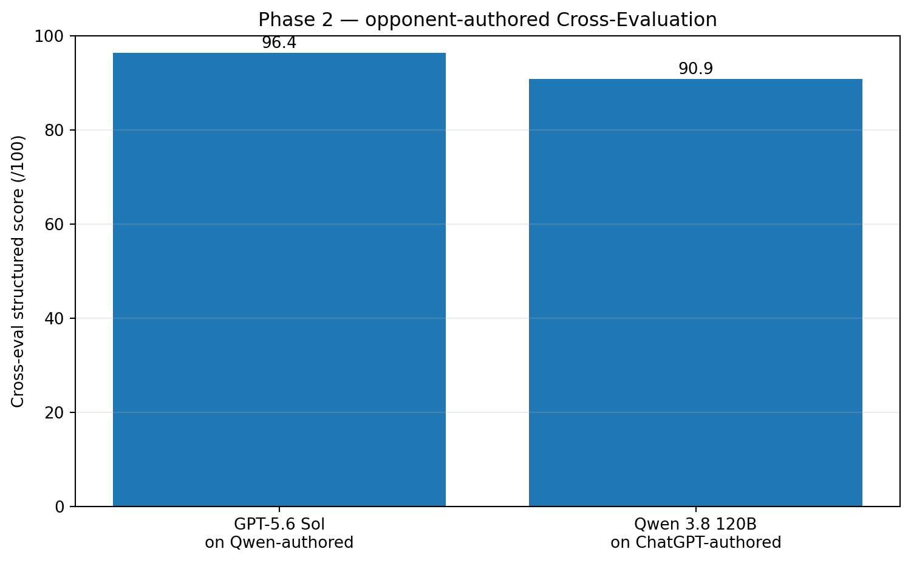
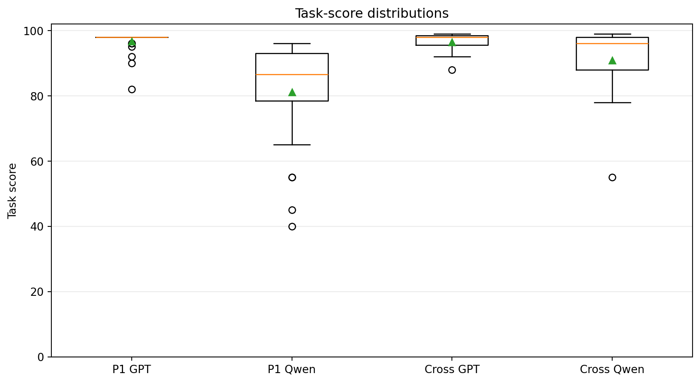
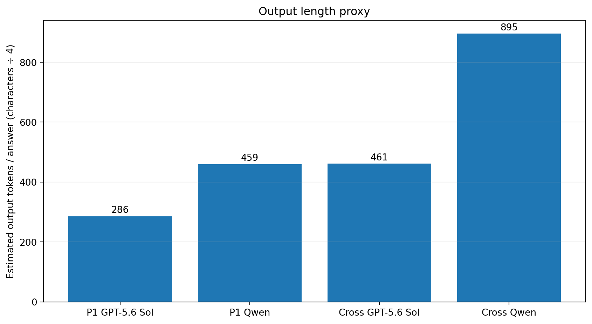
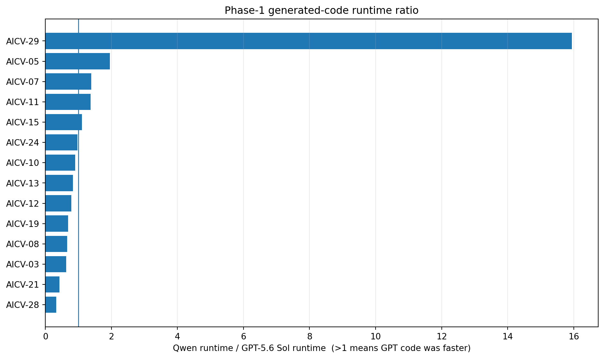
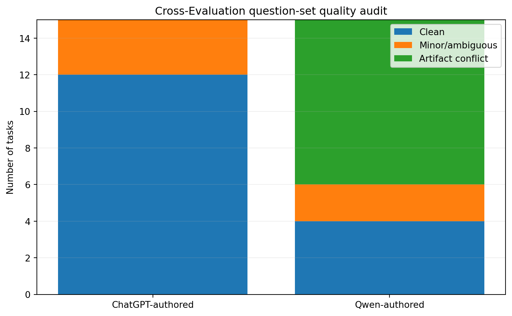
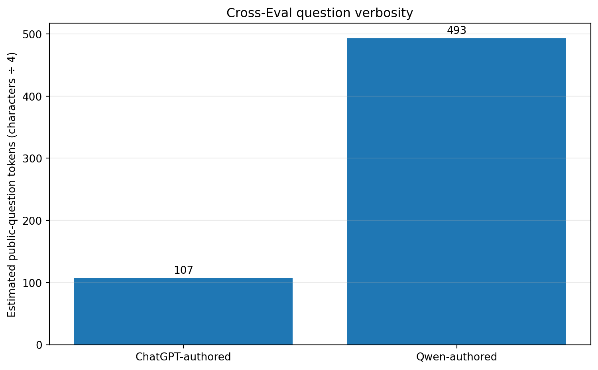

GPT-5.6 Sol vs Qwen 3.8 120B
A practical comparison of answer quality, consistency, code size, generated-code runtime, benchmark reliability, and the operational effort of using an internal model in day-to-day research.
1. What we tested
Both systems first answered the same 30 AI/CV programming tasks. We then added a Cross-Evaluation: 15 questions created from the ChatGPT side were answered by Qwen, and 15 Qwen-authored questions were answered blindly by GPT-5.6 Sol. The second phase was designed to test how much question authorship changes the result.
2. Headline result

The gap moved from 16.3 points to 5.5 points. This is a useful reminder that benchmark construction changes the measured distance between systems.
3. Consistency mattered
Qwen often produced strong answers, but it had more low-scoring outliers. GPT-5.6 Sol stayed closer to its typical score across these tasks.
| Run | Mean | SD | Minimum | 90+ tasks |
|---|---|---|---|---|
| Phase 1 — GPT-5.6 Sol | 96.7 | 3.4 | 82 | 29/30 |
| Phase 1 — Qwen | 81.1 | 15.3 | 40 | 9/30 |
| Cross — GPT-5.6 Sol | 96.4 | 3.2 | 88 | 14/15 |
| Cross — Qwen | 90.9 | 11.7 | 55 | 10/15 |

4. Qwen produced more text and more code
Because comparable provider token accounting was unavailable, the report uses a transparent common proxy: ceil(characters / 4). Exact character and code-line counts are also stored.
| Run | Mean chars | Estimated tokens* | Mean code lines |
|---|---|---|---|
| Phase 1 — GPT | 1141 | 286 | 27.6 |
| Phase 1 — Qwen | 1836 | 459 | 40.7 |
| Cross — GPT | 1844 | 461 | 39.7 |
| Cross — Qwen | 3578 | 895 | 67.8 |
*Length proxy, not provider token billing.
Qwen generated about 1.61× the answer length in Phase 1 and 1.94× in Cross-Evaluation. That can matter in real work because longer responses create more material to verify and maintain.

5. Generated-code runtime was close overall
Qwen-generated code was faster on 9/14 archived workloads and GPT-generated code on 5/14. The geometric-mean runtime ratio was 1.031×, close to parity. The main difference was therefore not that one side always wrote faster code.

6. The benchmark creators were also part of the experiment
| Author | Clean | Minor / ambiguous | Artifact conflicts |
|---|---|---|---|
| ChatGPT side | 12 | 3 | 0 |
| Qwen | 4 | 2 | 9 |
Several Qwen-authored tasks disagreed internally between the prompt, examples, grader descriptions, or generated reference. We therefore scored against the written specification first and audited references instead of treating them as infallible.

7. Concrete implementation findings
- Qwen / XCHAT-09: a valid higher-rank logits case fails in the zero-smoothing branch.
- Qwen / XCHAT-13: matched indices are returned as unmatched, and an empty cost matrix crashes.
- GPT / XQWEN-13: the Hungarian implementation matched SciPy optimal cost on 120 random matrices.
- Qwen-authored XQWEN-05: the expected overlap area conflicts with geometry and the generated reference.
8. Question-writing style was very different
Qwen's public Cross-Eval questions averaged 1969 characters versus 425 on the ChatGPT side. Its reference implementations averaged 56.2 lines versus 8.7. This is descriptive, not a claim that verbosity caused the conflicts.

9. Practical R&D takeaway
For our workflow, the managed chatbot was the better default research tool.
The benchmark score is only part of the reason. Running Qwen internally also required serving, worker management, retries, JSON repair, resume state, output-budget control, and failure recovery. These are normal self-hosting responsibilities, but they take time away from the research question.
With ChatGPT, most of that operational burden was outside the research team, making paper analysis, experiment design, debugging, and code iteration more direct.
When privacy and on-premise constraints are not the dominant requirement, a strong managed chatbot can be a better default R&D assistant because it combines high answer quality with much lower serving and maintenance overhead.
When self-hosting is still the right choice
An internal model remains valuable for sensitive data, strict offline/on-premise operation, full inference control, custom fine-tuning, specialized checkpoints, or independence from external services.
10. Detailed Cross-Evaluation
Qwen answering ChatGPT-side questions
| ID | Task | Score | What mattered |
|---|---|---|---|
| XCHAT-01 | Robust Percentile Normalization | 99 | Core behavior and finite-value percentile handling are correct. |
| XCHAT-02 | Integral Image Rectangle Sums | 98 | Integral image and half-open rectangle sums are correct, including empty rectangles. |
| XCHAT-03 | Patchify and Unpatchify Images | 96 | Round-trip logic is correct. Non-positive patch_size is not handled cleanly, but positivity was only implicit in the public task. |
| XCHAT-04 | Soft-Argmax 2D Keypoints | 98 | Core soft-argmax is correct. Explicit shape validation is limited and .view() can reject non-contiguous heatmaps. |
| XCHAT-05 | Transform Boxes Through Crop and Resize | 98 | Correct clipping, filtering, scaling, dtype and empty-output behavior. |
| XCHAT-06 | Camera Ray-Plane Intersection | 84 | Valid intersections are computed correctly, but parallel/behind-camera rays are filtered to an empty/shorter result instead of being rejected while preserving the stated (N,3) contract. |
| XCHAT-07 | Depth Consistency Mask | 99 | Correct validity mask and symmetric relative-error computation. |
| XCHAT-08 | Mean Multiclass Dice Score | 94 | Core macro-Dice logic is correct; validation of num_classes/ignore_index semantics is incomplete. |
| XCHAT-09 | Label-Smoothed Cross Entropy | 78 | Major edge-case defect: smoothing=0 delegates to torch.nn.functional.cross_entropy, which assumes class dimension 1 and fails the required (...,C) contract for rank>2 logits. |
| XCHAT-10 | Global-Norm Gradient Clipping | 88 | Core clipping is correct, but negative max_norm is not rejected and mixed-device gradients are not validated. |
| XCHAT-11 | 2D Sinusoidal Positional Encoding | 88 | Uses a full-D frequency scaling convention. The public wording is somewhat ambiguous, but this differs from the intended split-axis 2D convention used by the benchmark reference. |
| XCHAT-12 | Temperature-Scaled Softmax | 94 | Stable softmax core is correct; explicit C>=2 validation is missing. |
| XCHAT-13 | Greedy Cost Matching With Threshold | 55 | Major defect: returned unmatched_rows/unmatched_cols are actually matched indices; an empty cost matrix also crashes on np.min. |
| XCHAT-14 | Causal Padding Mask for Variable Lengths | 97 | Core causal/padding mask is correct and vectorized. |
| XCHAT-15 | Warmup Cosine LR Multiplier | 97 | Warmup and cosine schedule are correct for the stated endpoints and zero-warmup case. |
GPT-5.6 Sol answering Qwen-authored questions
| ID | Task | Score | What mattered |
|---|---|---|---|
| XQWEN-01 | Adaptive Thresholding via Integral Image | 99 | Correct O(HW) integral-image implementation with clipped boundary windows. |
| XQWEN-02 | Polygon Area and Centroid via Shoelace | 98 | Correct signed shoelace area and centroid, including clockwise and degenerate cases. |
| XQWEN-03 | Robust Grid Alignment via Hough Transform | 88 | Reasonable robust Hough implementation, but this task is heuristic/under-specified: Hough thresholds and image-angle sign convention are not fully pinned. |
| XQWEN-04 | Keypoint Heatmap Peak Extraction with Sub-pixel Refinement | 97 | Follows the explicit quadratic-refinement formula. One public example is inconsistent with that formula; the solution follows the formula rather than the faulty example. |
| XQWEN-05 | Rotated Bounding Box Intersection Area | 98 | Geometric polygon clipping is correct. The first public example/private grader has the wrong expected area (1.0 vs the geometrically correct 2.0). |
| XQWEN-06 | Camera Pose from Vanishing Points | 92 | Implements K^-1 vanishing directions, Gram-Schmidt and right-handed completion. Public examples are inconsistent with the stated projective relation; sign convention remains partly under-specified. |
| XQWEN-07 | Depth-Aware Surface Normal Estimation | 97 | Implements reconstructed 3D tangents and normalized cross products. The Qwen reference itself fails on a valid constant-depth input. |
| XQWEN-08 | Boundary F1 Score for Segmentation | 93 | Follows the written 4-connected boundary and Euclidean-tolerance definition. Empty-empty behavior is ambiguous across prompt/reference, and a public numeric example is inconsistent. |
| XQWEN-09 | Dice Loss with Class Weights | 98 | Matches the written inverse-frequency weighted Dice formula. A public example/private test conflicts with that same formula for an absent class. |
| XQWEN-10 | Gradient Clipping by Global Norm | 98 | Correct global norm calculation and scaling; returns non-mutating clipped tensors as requested. |
| XQWEN-11 | Rotary Position Embedding (RoPE) Implementation | 99 | Correct vectorized interleaved RoPE rotation and frequency definition. |
| XQWEN-12 | Expected Calibration Error with Equal-width Bins | 99 | Correct equal-width-bin ECE formula with p=1 handling. Two public expected values are inconsistent with the formula. |
| XQWEN-13 | Hungarian Algorithm for Multi-Object Tracking Assignment | 99 | Pure NumPy/Python Hungarian implementation. Verified against SciPy on 120 random rectangular/square matrices with zero optimal-cost difference. |
| XQWEN-14 | Temporal Mask Smoothing with Boundary Preservation | 96 | Follows the explicit boundary-preservation rule. One public example conflicts with that rule. |
| XQWEN-15 | Cosine Annealing with Warm Restarts | 95 | Follows formal half-open SGDR restart cycles. Public examples/private graders conflict with the formal restart definition and even with Qwen's own reference implementation. |
11. Reproduce the checks
python tools/validate_repository.py
python tools/recompute_scores.py
python tools/analyze_output_metrics.pyFinal conclusion
This benchmark does not establish a universal ranking of language models. It does show a consistent pattern in this AI/CV workflow: GPT-5.6 Sol scored higher, made fewer severe errors, and produced shorter outputs, while Qwen remained capable and sometimes produced faster executable code.
Cross-Evaluation narrowed the gap and showed that benchmark design matters. It also highlighted something leaderboards often miss: the operational cost of running the model.
For a research team focused on fast iteration, and where cloud use is acceptable, our experience supports using a strong managed chatbot such as ChatGPT as the default assistant. Self-hosted models remain valuable when privacy, control, customization, or offline deployment justify the added operational work.
All raw questions, answers, references, grader descriptions, score tables, audits and analysis scripts are included in the repository.